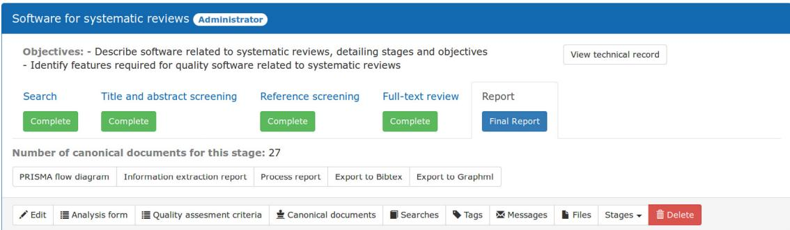
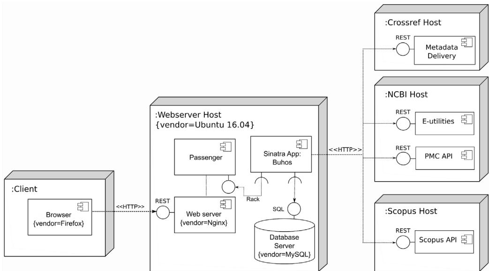
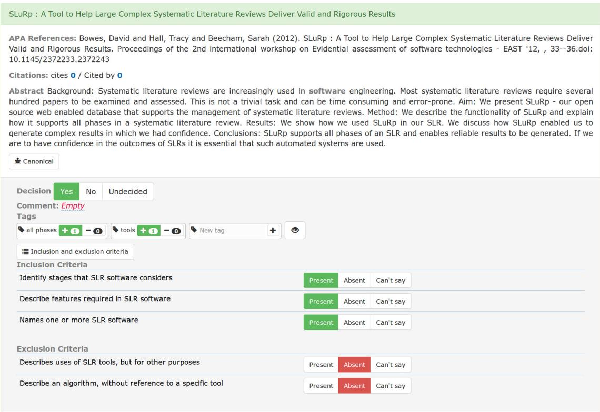
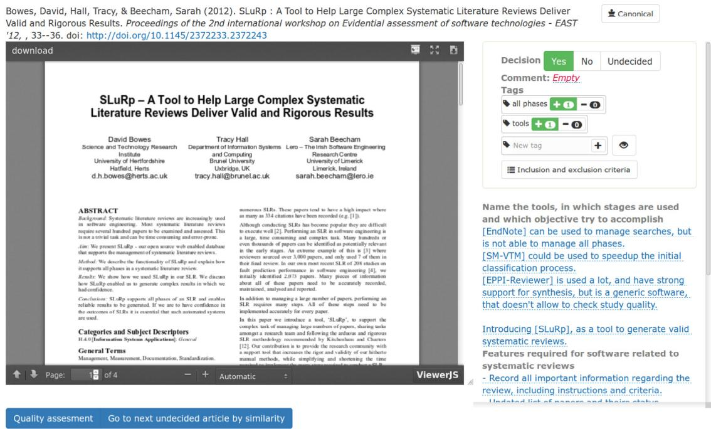
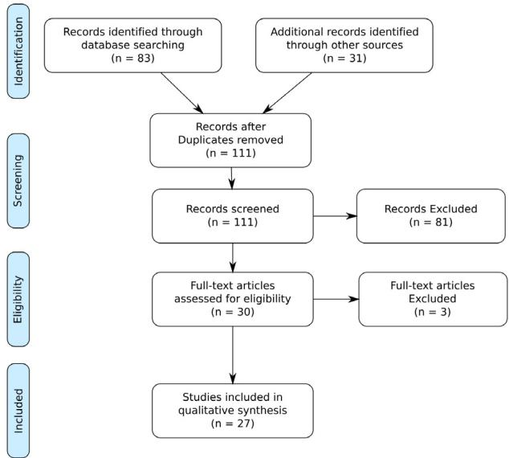

Buhos: A web-based systematic literature review management software¶
Claudio Bustos Navarrete a,b,∗, María Gabriela Morales Malverde a, Pedro Salcedo Lagos c, Alejandro Díaz Mujica a
a Department ofPsychology, Universidad de Concepción, Víctor Lamas 1290, Concepción, Chile b Department ofPsychiatry and Mental Health, Universidad de Concepción, AvenidaJuan Bosco s/n, Piso 3, Hospital Regional de Concepción, Servicio de Psiquiatría, Concepción, Chile
c Department of Research Methodology and Information Technology Education, Universidad de Concepción, Víctor Lamas 1290, Concepción, Chile
a r t i c l e i n f o¶
Article history: Received 6 March 2018 Received in revised form 3 October 2018 Accepted 26 October 2018
Keywords: Systematic literature review Web-based software Collaborative work Ruby
a b s t r a c t¶
Software can significantly facilitate the management ofthe complete systematic literature review process (SLR). However, most specialized software for use in SLR processes is designed to meet the requirements of the health and medical sciences and software engineering, and there is a need for dedicated software for the specific research requirements of the social sciences. Furthermore, most of the software currently used is closed and the open source code alternatives require personnel with expertise in configuration and setup.
We present Buhos, an application for managing the complete process of systematic literature reviews that is web-based and developed in Ruby. It offers functionalities for supporting the process of searching screening, data extraction and reporting. Buhos can be used locally through an in-house web server, as well as in a distributed manner, integrated with other online services.
© 2018 The Authors. Published by Elsevier B.V. This is an open access article under the CC BY license (http://creativecommons.org/licenses/by/4.0/).
Code metadata¶
| Current Code version | v1.0.0-RC1 |
| Permanent link to code / repository used of this code version | https://github.com/clbustos/buhosBuhos Windows Toolkit is required on Windows:https://github.com/clbustos/buhos-windows-tk |
| Legal Code License | BSD-3 |
| Code Versioning system used | Git |
| Software Code Language used | Server: RubyClient: HTML, CSS and JavaScript |
| Compilation requirements, Operating environments & dependencies | Ruby 2.4, bundler gem and development libraries for Ruby, mysql and/or sqlite3 are needed.Ghostscript required for extraction of images from PDFs.Runs on Linux (tested on Ubuntu 14.04 and 16.06), Windows (tested on Windows 7 and 10) and MacOS (tested on High Sierra).See Manual for detailed instructions. |
| If available Link to developer documentation / manual | API documentation: https://www.buhos.org/api/clbustos@gmail.com |
| Support email for questions |
Software metadata¶
| Current software version | v1.0.0-RC1 |
| Permanent link to executables of this version | For Debian, Ubuntu, CentOS and RHEL, use packages available on https://packager.io/gh/clbustos/buhosFor Windows, installer available on https://www.buhos.org/windows-download/Latest code available on: https://github.com/clbustos/buhos |
| Legal Software License | BSD-3 |
| Computing platforms/Operating Systems | Server: Any platform that compiles Ruby 2.4. Tested on Ubuntu 14, Ubuntu 16, Windows 7 and Windows 10.Client: Any standards-compliant browser. Tested on Firefox and Chrome. |
| Installation requirements & dependencies | Linux packages and Windows installer provide all necessary dependencies.Using source code, Ruby 2.4, bundler gem and development libraries for ruby, mysql and/or sqlite3 are needed. Extraction of images from pdf requires ghostscript. See Manual for detailed instructions |
| If available, link to user manual – if formally published include a reference to the publication in the reference list | English and Spanish manuals are available, respectively, at:https://www.buhos.org/manual/en/https://www.buhos.org/manual/es/ |
| Support email for questions | clbustos@gmail.com |
1. Introduction¶
Buhos responds to the need for a software tool that manages the complete process of systematic literature reviews (SLR) of medium to high complexity in the fields of social science and education, fields which have their particular requirements, distinct from those of other knowledge domains. Upon analyzing the results of the Kohl et al. review [1] on software tools that partially or fully cover the stages of an SLR, it is observed that most of these tools have been designed with the health and medical sciences and software engineering in mind, albeit being promoted as tools for general use. SLRs designed from the perspective of these disciplines share characteristics that do not necessarily fill the requirements of other fields of knowledge.
In the health and medical sciences (HMS) the Cochrane Handbook for Systematic Reviews of Interventions [2] is predominantly used to direct the performance of systematic reviews. Most of its indications are related to the evaluation of clinical assays and randomized clinical trials (RCT) as these are considered to deliver more reliable evidence than other types ofinvestigations. The focus on a specific type of investigation enables the establishment of a review procedure that is relatively consistent, standardized, with defined steps, independently of the specific research question [3]. It is common practice to screen and extract information from thousands of articles. The process can be partially automated [4,5], as there are clear criteria for defining research questions, such as the well-known PICOS — participants, interventions, comparisons, outcomes and study design [6]. For performing quality assessments, the Cochrane manual offers a detailed analysis of the possible bias risks, including a domain-based tool for their assessment [2].
The focus for conducting SLRs and meta-analysis in the ambit of social science is fundamentally different from that of HMS. The need exists to incorporate diverse types of investigations into the SLR, such as observational studies and case studies, as RCTs are infrequent. In fact, it is not possible to conduct RCTs on certain topics for ethical reasons [3,7]. It must be taken into consideration that observational studies cannot be evaluated in as standardized and step-by-step a manner as are RCTs [3]. Depending on the research question, the sources of bias must be carefully assessed in each study, considering the latter’s specific design, and carrying out a historical, theoretical and contextualized assessment [7,8]. Thus, a software tool for conducting SLRs in the social sciences should be able to record in detail the search procedures, the justification for using moderators, the coding procedures and agreements between independent coders, seeking the greatest possible transparency in evaluating the quality of the studies considered [8]. Besides this, the tool must have the capability to accept different types of information sources, since most of the evidence is not found in journals but in grey literature, such as conferences, theses, technical reports and other unpublished documents [9].
Therefore, developing an SLR-supporting software tool for the social sciences requires unifying various types of investigations, theoretical as well as empirical, in order to reach a conclusion. The software tool utilized must be a flexible one that enables multiple ways of performing systematic reviews, while ensuring maximum transparency and rigor by recording each step followed by each evaluator, especially in discrepancy resolution [10].
The studies carried out in the software engineering (SE) environment on user requirements for SLR support software [11,12] are pertinent for software development geared to the social sciences, since both disciplines pose similar challenges vis à vis SLR development. This is because the research designs utilized are generally of an observational and post-facto nature, and the participants’ profile is usually that of experts, making it difficult to establish blind procedures [13]. Considering the main requirements described in the literature, Buhos incorporates several tools to facilitate communication between users, which, added to its ability to handle large numbers of documents in a robust manner, enables the performance of medium- to large-scale SLRs. Besides this, metadata and files of already finished documents can be reused to update prior reviews. With regard to software development processes, special attention has been given to the application’s usability, test coverage, maintainability and documentation.
2. Problems and background¶
2.1. Systematic literature review: the concept¶
Literature reviews are investigations that seek to ‘‘describe, summarize, evaluate, clarify, and/or integrate the content of the primary reports’’ [14, (p107)] within a specific area of knowledge, in its empirical, theoretical, critical or methodological aspects. The considerable ambiguity imbedded in the concept of ‘literature review’ has led to significant efforts to define its precise meaning [9], with 16 to 27 different types identified [15–17] depending on the classification system employed. In any case, there is consensus that the Systematic Literature Review (SLR) is the most precise and reliable method for obtaining information [18], having demonstrated its usefulness for both theoretical and empirical approaches [19]. It has had notable success in the areas of HMS [20], software engineering [21,22], social sciences [7,23] and education [24].
The concept of SLR can be understood either specifically or comprehensively. The definition of SLR adopted by the Cochrane
Collaboration, associated to the manner in which it is carried out in the HMS, indicates that the SLR ‘‘attempts to collate all empirical evidence that fits pre-specified eligibility criteria in order to answer a specific research question. It uses explicit, systematic methods that are selected with a view to minimizing bias, thus providing more reliable findings from which conclusions can be drawn and decisions made’’ [2, (sec1.2.2)]. An SLR must have the following characteristics: (a) clear objectives, with preselected criteria for including or excluding articles; (b) an explicit, reproducible methodology; (c) systematic search capability that attempts to identify all studies that meet the inclusion and exclusion criteria; (d) an assessment of the validation of the evidence contained in the studies included through bias risk assessment, for example, and (e) a systematic presentation and synthesis of the evidence collected [2]. These revisions are usually associated with metaanalysis, which applies statistical methods to summarize the results. Meta-analysis is used to synthesize the evidence presented in the different studies incorporated into the SLR to detect effects, estimate their magnitude and variability, and analyze the factors that influence them [25].
From a broader perspective, an SLR is considered as a review of the literature that is exhaustive, transparent and unbiased, developed with a clearly defined methodology, performed in a systematic manner [26]. This is what differentiates it from a narrative review, which mixes theories and opinions and does not apply a specific method of selection and assessment to the available information [27]. An example ofthis mode of understanding systematic reviews is put forward by EPPI-Centre, which explicitly points out that the only thing that differentiates a systematic review from one that is not systematic is that ‘‘a systematic review has an explicit, rigorous methodology. This makes the results of the review accountable and open to criticism and debate’’ [28, (p9)].
2.2. Stages ofa systematic review¶
According to the guidelines of Kitchenham & Charters [13], the systematic review process can be divided into three major phases: planning, conducting, and reporting. Each of these phases in turn consists of various stages. Planning the review considers: (a) identifying the need for conducting a review, (b) commissioning of the study to an external party, (c) specifying the research question(s), (d) developing the protocol, and (e) evaluation of the protocol by an external agent. Performing the review involves (a) identifying the studies through an adequate search strategy, (b) selection of the studies, (c) evaluating the quality of the studies, (d) extracting information from the studies and monitoring the process, and (e) synthesizing the information. Finally, the report involves: (a) specifying the dissemination mechanism, (b) formatting the report, and (c) evaluating the report. All these stages are considered mandatory, except for commissioning the study, evaluating the protocol and the evaluation of the final report.
It should be kept in mind that the review process is considered as being iterative, thus it is possible that, for instance, the protocol will be refined following its evaluation, or that the methods of analysis planned will be improved once the data is obtained [13]. Snowballing is an iteration-based method for identifying pertinent studies not yielded by database searches. There are two modalities: (a) forward-snowballing: new documents are incorporated that cite previously selected documents, (b) backward-snowballing: adds documents cited in the selected documents. This method is particularly useful when a critical mass of papers has already been identified [29].
2.3. SLR in health and medical sciences, software engineering and social sciences
The greatest developments in SLR have been observed in the fields of health care and health policy. It is hoped that by the end of the decade of the 2010s, over 200,000 SLRs will have become available to HMS [25]. In the International Prospective Register of Systematic Reviews (PROSPERO), there has been a ten-fold increase in the number of SLRs between 2012 and 2017, from 63 per month in 2012 to 800 per month in 2017 [18].
SLRs in the fields of health and medicine owe their success to their association with evidence-based medicine (EBM), defined as ‘‘the sensible use of the best available external evidence from systematic research, assimilated with individual clinical expertise to evaluate the best course of care for a patient’’ [20, (p2)] The search for evidence can be very difficult for physicians, considering the staggering volume of research data available on Internet. The existence of publication bias renders it even more difficult to reach a precise assessment of the evidence [30]; thus the critical role of the systematic review, which evaluates the available evidence in a systematic, reproducible manner, at the same time weighing the risk of bias [20]. For this reason, SLRs are routinely used by researchers to inform on health practices and policies [31].
SLRs in HMS are significantly associated with the Cochrane Database on Systematic Reviews, which is a set of reviews and protocols maintained by specialized groups [20]. The two basic principles of the Cochrane Collaboration are the need for unbiased comparison of different interventions, which is the reason for their preference for SLR in RCTs, as well as the importance of ongoing selection and updating of the available evidence, to arrive at the most reliable estimators of the effects [32]. Clarity in the type of studies, as well as in the analyses considered to be appropriate, enables establishing a standardized procedure for performing the SLR with step-by-step instructions, as reflected in the Cochrane Handbook for Systematic Reviews of Interventions [2].
In software engineering (SE), the introduction of SLRs in the discipline [33,34] is considered to have occurred in 2004 due to their central role in evidence-based software engineering (EBSE) presented by Kitchenham et al. [35], which sought to integrate academic research and industrial practice in order to find the best evidence sustaining the software development. Kitchenham proposes a procedure for conducting SLRs in software engineering [36], which was updated in 2007, applying concepts from the social sciences [13], and in 2013, following a tertiary study of 63 SLRs in the discipline [29].
SE investigation poses specific challenges that are analogous to those of research in the social sciences. First, in HMS it is common to restrict an SLR to RCTs or, considering the research question, specific designs can be pinpointed as being more appropriate. In the case ofSE, the paucity ofempirical research implies aggregating information from a wide variety of different types of research [13]. In addition, the SE techniques studied in SLR are usually part of a larger software development cycle, which makes it difficult to observe an individual effect. Unlike studies conducted in HMS, where treatment recipients can be blind to the interventions performed, in SE the methods and techniques usually must be developed by experts [37].
While the development of SLRs in SE has not been as explosive as in the health area, it is nonetheless a very active area of development, characterized by a concern for finding software tools that can support SLR processes, and by the presence ofmultiple tertiary studies aimed at exploring both the adoption ofthese types ofstudies as well as the evidence on specific themes. In 2017, a mapping study on threats to validity reported the existence of 316 SLRs in the area of software engineering [38]. Multiple investigations have examined the use of tools in SLR, conducting evaluations of their characteristics [1,11,39,40] and identifying the requirements and characteristics that the SE community expected from them [12, 41,42]. Multiple tertiary studies have been conducted to evaluate the adoption, quality and use of SLRs in the discipline [22,43], the experience of conducting SLRs [29,33] and evaluating the evidence on specific themes such as Ambient Assisted Living [44], Agile development [45], Software process improvement [46], Software testing [47], requirements engineering [48] global software development [49] and distributed software development [50].
As for the social sciences, various challenges are posed by SLRs. First of all, while there is already a long tradition of systematic reviews in social science, the incorporation of quantitative tools developed in the health environment has clashed with the more qualitative tradition in evidence gathering, particularly in the field of education [51]. Secondly, much of the available evidence is based on observational designs, which required undertaking the significant methodological effort of defining the conditions under which unbiased results could be obtained [3]. In HMS, SLRs and meta-analysis focus on establishing homogeneous evidence which enables establishing each treatment’s efficacy with certainty for wide, hopefully worldwide dissemination. In contrast, the social sciences focus on describing the heterogeneity of populations and situations to understand the causal processes that are the basis of a specific intervention’s successful outcome. For example, the representativity of a study population can be more important, or how much information is available on confounding variables, than the presence or absence of randomization. Besides this, there are different reporting styles even within each discipline, adding complexity to the task of standardizing the information to be gathered [7].
Regarding the orientations for the performance of SLRs in the social sciences, there are important differences in approach, depending on the discipline and the institutions sponsoring the studies [3]. In the field of education, the What Works Clearinghouse, a flagship product of the Institute of Education Sciences at the U.S. Department of Education, strongly emphasizes quantitative analysis of RCT and quasi-experimental design, with rigorous criteria for inclusion and exclusion [16], which brings it more in line with the Cochrane approach. The Campbell Collaboration has focused on the effectiveness of programs, policies and practices in the fields of crime and justice, education, international development, and social welfare. Notwithstanding the recognition of the importance of RCTs, it is considered advisable to include studies with designs having less internal but greater external validity, and to add qualitative studies that allow for increasing the review’s explicative capacity [32]. Finally, EPPI-Centre has focused on social policy, including education, health, social care, developing economies, sports, the environment and crime. It has a broad definition of what constitutes a review, considering aggregative approaches that seek to summarize information from different studies, such as meta-analyses, as well as configurative approaches involving an interpretative process of the information that is available for producing high-level explanations [28].
Considering the variety of existing approaches for carrying out systematic reviews in the social sciences, it is difficult to establish a clear indicator for demonstrating its scope. A search in Scopus of all documents in Social Sciences containing the terms ‘‘systematic review’’ or ‘‘meta-analysis’’ in their titles with different variations, and excluding those classified under the category ofMedicine, lists a total of 10,100 documents, the majority from Psychology (4,679) followed by Business, Management and Accounting (1,754).
2.4. The role ofsoftware tools in SLR¶
Systematic literature review processes are difficult to execute. They require searching for hundreds of thousands of articles and identifying which ones are useful. This entails meticulously recording a great deal of information on each document. The review process consists of several steps — prepare the topic, search for articles, screen studies, extract data, analyze and synthesize the data, then report findings [4]. Each step must be performed accurately, transparently, and recorded [13]. The selection of tools, particularly the IT tools, requires balancing initial and maintenance costs to achieve the necessary functionality in processes having differing degrees and levels of complexity [52].
The most important studies on the requirements of SLR users in reference to available computer tools are those of Al-Zubidy et al. [12] and Marshall et al. [11]. The Al-Zubidy study [12] conducted with SE practitioners, concludes that multiple requirements exist for SLR tools. It identifies 112, and that no tool is actually available at this time that covers them all. After analyzing 6 tools, the study found that each one covered from 32% to 68% of the community’s requirements. Most notable were the need for facilitated collaboration among participants located locally as well as in different countries, the need for reductions in researchers’ work time through automated processes, for access to a central repository with information from past SLRs, and for integration of the different tools. Marshall et al. [11] found that researchers who perform SLR in the social and health sciences agree with SE researchers on the importance of management of large-scale SLRs and the handling of communications within the team. They also placed special emphasis on the challenges that arise during processes of searching, selection and screening, and quality assessment. Differences are observed between social science and health science researchers with respect to SE researchers, in that the first require version control in SLRs and the option of formatting the references in the final report. In addition, social science researchers assign greater value to the possibility of carrying out meta-analyses, having access to safety mechanisms to maintain data confidentiality, while text analysis tools are less of a concern.
It should be emphasized that, while SLR tools can help speed up the process and perform actions that are extremely difficult or impossible for humans to do, they can only assist researchers in conducting the SLR, because human judgment is required at all stages of the process. While proposals exist for automating most [4,5] or the entire SLR process [53], this is only possible with a defined procedure and standardized quality criteria, which are proper only to HMS. More specifically, in the social sciences, the planning phase involves a process of negotiation between the researchers, practitioners and stakeholders, which, while possible to facilitate with computer tools, must necessarily be carried out by the individuals concerned [28]. In SE, however, and to a greater extent in the social sciences [7], the need for integrating various types of investigation for different situations implies the impossibility of applying a single quality criterion, as each study must be individually assessed on the basis of its context [8]. Finally, researchers need to have confidence in the reliability of automation mechanisms before they will accept them completely [11].
2.5. Related work¶
Multiple types of software are available for use in the performance of systematic reviews. There are programs that, while not designed to carry out systematic reviews, provide support for the various stages of the process. Office automation software, such as Microsoft Word or Excel, is useful for creating forms that can be replied to on paper or through e-mail. Web-based systems of forms and surveys generate forms that are simple to answer and process. While these programs are easy to setup and do not require much training to learn to use, they make it harder to keep a record of the project’s progress and resolve possible conflicts between evaluators [52].
Of the commonly-employed research tools, reference management software is one of the most popular [54] with EndNote as the preferred choice of many researchers for supporting the search process [55,56], screening [57,58] and to eliminate duplication [59]. For the stage of data extraction, qualitative analysis software such as NVivo can be used [29,56,60].
Among the software tools designed to perform reviews are those that focus on specific stages of the process. According to Marshall & Brereton’s mapping study [40] out of 14 software tools, 11 concentrate on the conducting phase of the systematic review, particularly the search stage, data synthesis and data extraction. For the search stage, there are available tools such as EndNote; however, the main problem with them is that they are closed [53]. There is interest in accelerating the processes ofscreening and data extraction through partial automation using machine learning [4], with such tools as abstrackr [61], PEx [62], ExaCT [63], Swift-Review [64] y GAPScreener [65]. Rayyan is a free tool for use in the initial stages of planning, search and screening, that offers the great advantage of having a highly usable web interface and mobile application. [66]. Another similar open source code tool is CREBP-SRA, which is mainly focused on reference and search management, and secondarily, on the screening process [67]. For the analysis and report stage, RevMan stands out for its capabilities in the preparation of protocols and articles, the development of meta-analyses and presentation of graphic results [68].
At the end of this list are the software applications that support the full process of systematic review. They enable carrying out searches, screening, data extraction, as well as numeric and qualitative analyses. A complete, updated summary of 22 of these tools is available in Kohl et al. [1], and so we will focus only on tools that consider two or more phases of the systematic review that are open source, as well as on those that are gratis or paid and not specifically assigned to the HMS.
We found 7 free code tools that support at least two ofthe three phases of a systematic review (see Table 1). All of these tools cover the conducting stage, 6 consider reports and 5, planning. Three of the tools, REviewER [69], SLRTool [70] and Slurp [55] can be considered as discontinued because they have not shown further development since at least 2015. All ofthe tools with the exception ofREviewER and metagear are web-based. Notably, at least 4 ofthe tools come from software engineering, although two claim to be useful for other disciplines. With respect to the development stack used, the use of Python stands out in various combinations with other languages, as the most complex Colandr [71] tool. Complete information for developers is only available for HAWC [72] and for metagear [73]. The tool most similar to Buhos out of all those available is Parsifal [74], as it is web-based, covers all the stages of the SLR process, it meets the requirements ofSoftware engineering which are proximate to the social sciences, allows carrying out reviews by multiple users, shows a high degree of usability, and is in active development. However, it does not have a system of permissions for controlling access to the platform, it does not have a permanent repository of documents that enables online quality assessment and data extraction.
The great majority of non-open source tools available for the performance of SLR that pertain to the social sciences are webbased. EPPI-Reviewer [75] is widely used as it is free to use and offers strong support for synthesis; however, it is specific to the health area and does not allow the performance of quality checks [55], it is not open source and cannot be used locally [76]. DistillerSR [77], according to its authors, is the most popular tool for performing systematic outlines with its powerful features of semiautomatic deduplication and screening. Nevertheless, it cannot be used locally and the subscription cost is prohibitive.JBI Sumari [78] has default support for 10 types ofreviews in health, social sciences and the humanities, as well as a user role system with differentiated access. But it does not allow for the creation of custom data extraction or quality assessment forms. Furthermore, access is limited to users with subscriptions. CADIMA [1] stands out for its highly structured interface, designed to guide review processes in a collaborative, intuitive way, its capacity for incorporating information extracted off-line and the option it offers of communicating the progress of the SLR in its website. However, it is not equipped with incorporated search or quantitative synthesis tools. SESRA [79] considers the complete SLR process, according to the phases and stages ofKitchenham & Charters [13], and is available in English and Portuguese. The developers have conducted objective and subjective evaluations of this tool and plan to expand it to cover SRL requirements in other disciplines.
A limited number ofSLR tools is available off-line. SLR-Tool [80] is a free use Java-based tool, available in Spanish and English. Its main limitation is that it is not enabled for collaborative work. StArt [81,82] is a freeware alternative that provides a high degree of support for SLR user requirements [12], particularly through its capacity for enabling collaborative work and backward-snowballing. However, it is not open-code and can only be used in the operating system Windows.
2.6. Rationalefor Buhos development¶
Thus, while there are tools available for managing the systematic review process in its entirety, most are not open source and are optimized solely for biomedical and software engineering research. From the perspective of our experience in systematic reviews in the fields of social science and education, a software tool is needed that can record each step of the process, including each researcher’s communications and decisions. It must have a defined methodology with clear stages, one that is adaptable to the research objectives as needed. In addition, the software must be easy to install, be available in multiple languages, and be possible to use both locally and online on various platforms. This will enable the development of accurate systematic reviews in the most efficient manner possible, within a broad range of scientific domains.
In terms of the SLR user requirements reported in the literature [11,12], Buhos facilitates the communication between the review users, providing an internal messaging and comments system for the document at each phase ofthe review process. This, in addition to the capability for managing hundreds of references swiftly, enables Buhos to support medium and large-scale SLRs. Special attention has been given to document storage, which allows reusing both metadata and article files between different SLRs. The security system implemented assigns specific roles for each user within the system and is of particular importance to social science researchers. For example, it enables permission to be granted solely for accessing the review results and not the review process or the original documents.
Regarding the software development processes, what sets Buhos apart is its high level of usability, testability and documentation. In our preliminary tests, the users learned to administer the tool and perform the steps for conducting an SLR within approximately one hour. Great user satisfaction was also observed with the interface innovations aimed at maximizing efficiency, such as the dashboard and the online PDF file viewer. As for testability, we have given special attention to complying with good engineering practices related to the test-driven development paradigm that guides the development of Buhos. Each new functionality includes specific tests allowing self-verification of correct functioning, together with the practice of Continuous Integration to enable rapid detection of problems. This renders the software fully functional at each iteration of development. Finally, Buhos includes extensive documentation for users and for developers. Users are provided with a manual with information on the SLR process and user guides; for developers there is a detailed description of use cases and the API.
Table 1
Open source tools for complete SLR process.
| Software name | Domain | Development stack | Source code availability | Web-based | Stages $^{a}$ | Last updated $^{b}$ |
| REviewER | Any/Software Engineering | Java | Github | No | Pl - Co | 2014 |
| SLRTool | Any/Software Engineering | PHP - MySQL | Not available | Yes | Pl - Co - Re | $2014^c$ |
| Slurp | Software Engineering | Java - MySQL | Project site | No | Pl - Co - Re | $2015^d$ |
| PARFISAL | Software Engineering | Python (Django) - DB agnostic | Github | Yes | Pl - Co - Re | 2018 |
| Colandr | Any/Environmental Evidence | Python (Jupiter) | Github | Yes | Pl - Co - Re | 2018 |
| HAWC | Biomedical (Hazard identification) | Python - Javascript (Node) - PostgreSQL | Github | Yes | Co - Re | 2018 |
| metagear | Any | R | Github - CRAN | No | Co - Re | 2017 |
Notes.
aPl : Planning. Co:Conducting. Re: Reporting
bDate obtained through inspection of Github commits
cDate inferred from the corresponding paper
dDate obtained through inspection of .war file source code
The authors consider that free and open source software (FOSS) offers two significant advantages for SLR support software development: efficiency and control. With respect to efficiency, the evidence indicates that with sufficient community participation, software can be generated that will fully satisfy the requirements of different user types and yield a lower error rate than equivalent proprietary software [83,84]. And as for control, according to the FOSS model, tools should be kept under the control of the user, whether individual or collective, which is compatible with the ethos of voluntary collaboration and academic autonomy that is proper to researchers [83].
Maintaining control over tools and data in such a costly process as an SLR is not merely an ethical issue; it is a practical one as well. While the notion offree use tools for developing SLR is an attractive one, users are well advised to consider the risk/benefit ratio aspect of vendor lock-in, particularly in relation to possible difficulties in information extraction from the application that might crop up, whether of processing data on other software programs or in the eventuality of switching to a different application if the first one turns out to be deficient or inadequate [85]. In the case of proprietary offline tools, while they provide greater control over the application and data, should any major problem with the software arise, the researcher remains in a situation of virtually total dependence on the developer, particularly if the data is recorded in non-standard ways.
3. Software framework¶
3.1. Software architecture¶
Buhos is a web-based application in the client–server mode. The server can run on the same system that the user runs, or they can communicate over a computer network. Access to the system resources is done following the REST architectural style. This involves providing a uniform interface for accessing and manipulating the system’s resources, where each resource and the related actions are equipped with their own internal resource identifier. This will facilitate the maintenance of stateless communication, favoring visibility, reliability and scalability of the software [86].
The application runs on an HTTP server and is based on a Model – View – Controller pattern (MVC). It separates the code accessing the database and performs actions within the problem domain (Model) from that which submits the information to the user (View), and from that which accepts the user’s entries, coordinating models and the views (the Controller).
h d l d d d b h h f Object-Relational Mapping (ORM) allowed access to the database information, using object-oriented programming. In addition, a database abstraction layer enabled the use of different databases according to the review requirements.
3.2. Software functionalities¶
The main features of Buhos Software are:
- Multiplatform: Installers are provided for the Ubuntu, CentOS and Windows operating systems using source code. The application can run on any operating system in which Ruby 2.4 can be compiled.
- Collaborative Work: A team develops each systematic review under the guidance ofan administrator. An internal messaging system is provided to maximize transparency in the decision process.
- Internationalization: All system texts and messages are available for translation, which enables adapting the software to various languages. Complete versions in English and Spanish are currently available.
- Flexible Stages of Analysis: The work of systematic review is performed in stages — searching, screening the title and abstract, screening references (backward snowballing in the literature [29]) , full-text review and reporting. Searches or documents can be specifically allocated to each user at each stage, and the administrator decides which documents will be part ofthe following stage. New information can be incorporated in preceding stages and is automatically updated in subsequent stages.
- Integration with various scientific metadata systems: The system allows recording searches exported from various bibliographic databases – currently WoS, Scopus, Ebscohost and Scielo – as well as references available in bibliographic reference software, using BibTeX. There is strong integration with Crossref and PubMed, enabling deduplication of records through DOI and/or PMID and obtaining information from references. Finally, the Scopus database can be contacted to obtain information on articles and their authors with a Scopus API key.
- File Repository: Each systematic review can host different files, which may or may not be allocated to the corresponding documents. An online PDF and ODF file view is provided, for evaluation of the article’s quality as well as for data extraction, so that the entire process can be carried out online.
- Multiple Forms of Analysis: The system considers the personalized definition of inclusion and exclusion criteria and of the criteria for evaluating the quality ofthe studies. Each document can be tagged using free or pre-established categories, and comments can be made on the inclusion and exclusion decisions at each stage as well. At the full-text review stage, a standardized form is incorporated to unify the reviewers’ analyses of the texts in each document, as well as the references to other articles.
l l h l f d h b exported as a BibTeX or Excel file. The list of documents and their relationships can be exported in GraphML for analysis in network programs such as Gephi or yEd. A PRISMA flow diagram is also provided, which breaks down the information flow during the various stages of the process [6].

Fig. 1. Dashboard for a complete review.

Fig. 2. Deployment diagram for demo.buhos.org.
- Dashboard: The entire process of performing the systematic review can be done from the Dashboard (Fig. 1). For both the administrator and the analyst, the Dashboard provides the required information on how many articles there are at every stage, how many articles have been assigned to each analyst and how many require resolution.
4. Implementation¶
4.1. Implementation details¶
The Buhos application runs on Ruby [87], an interpreted open source software that compiles on various UNIX platforms such as Linux, as well as on Windows and MacOS. As the framework of the web server, library Sinatra [88] is used, a DSL for the rapid development of web applications, which can run autonomously or be integrated into another HTTP server, such as Apache or Nginx, through Passenger.
An effort was generally made to look for already established libraries to provide functionalities to the system. BibTeX ruby was used for the import and export of BibTex [89], serrano was used for access to Crossref [90], and i18n was used for multi-language support [91]. An internally-developed library enables accessing the Scopus and NCBI (PubMed) database.
The Sequel library which provides ORM functionalities as well as an abstraction layer of SQL, is used to access the database [92]. The system has been tested on MySQL and SQLite given their popularity and functionality. The first database (MySQL) is recommended for intensive use by multiple users on a shared server, while the second (SQLite3) is useful for immediate use of the application in a mono user environment.
Each resource has a distinctive URL to follow the REST style. For example, the review can be accessed with identifier 1 via the path /review/1, and its messages and route searches in routes /review/1/messages y /review/1/searches, respectively. Only the information on user authorizations and the output messages from actions on resources is stored from the session, such that each action on a resource can be carried out directly through accessing a URL.
A client can use any browser that is standard-compliant, that accepts HTML5 and Javascript. The system has been successfully tested in Firefox and Chrome. Bootstrap is used [93] as the main toolkit to generate HTML, CSS and Javascript, since it ensures maximum compatibility between different types ofbrowsers. User interaction functionalities not contemplated in HTML5 were developed using jQuery [94].
Fig. 2 shows the deployment diagram for the Buhos demo found in http://demo.buhos.org. A standard compliant browser, Firefox in this example, connects via HTTP to the Nginx server. Nginx loads Passenger as a module. Passenger offers a Rack interface [95] which is compatible with Sinatra, a framework on which Buhos runs. To support multiple users, MySQL is used as a database. Buhos connects to the external services of Crossref, NCBI (PubMed) and Scopus through HTTP connections, through the APIs provided by each service.
The use of installers facilitates use of the system by non-IT experts. Inno Setup was used for Windows [96]. For Linux, pkgr [97] is used, which enables the local generation ofpackages for Ubuntu, Debian, CentOS and REHL. In addition, it integrates with the packager.io site to automatically generate packets in every commit to Github (https://packager.io/gh/clbustos/buhos).
Table 2
Analysis of Buhos requirements.
| # | Consolidated requirements | Score |
| 1 | Collaboration support | 100% |
| 2 | Integrated search | 36% |
| 3 | Traceability | 88% |
| 4 | Support text mining | 25% |
| 5 | Support inclusion and exclusion | 60% |
| 6 | Support quality assessment | 50% |
| 7 | Data maintenance | 100% |
| 8 | Automated analysis | 25% |
| 9 | Visualization | 33% |
| 10 | Coding of methods and data | 14% |
| 11 | Storage of studies | 67% |
| Total | 60% |
4.2. Evaluation ofBuhos¶
We have evaluated the software Buhos considering three criteria. The first criterion was usability. Buhos was used in a simplified SLR process by 5 participants who had wide experience in conducting SLR, but had no prior contact with the application. The second criterion was the extent to which Buhos satisfied the requirements ofSLR users in the SE field, assessed by using the method described by Al-Zubidy et al. [12]. The third criterion was coverage of tests and maintainability. This was evaluated by using the metrics in the website Code Climate.
The Buhos software usability test aimed to determine whether the participants were capable of using Buhos to conduct an SLR. Usability requirements and problems were identified and an assessment made of the software’s perceived level of usability. The test was held with 5 individuals who were experts in using SLR, 3 of them in the field of psychology and 2 in economics. Given the participants’ time constraints, a one-hour protocol was applied individually, involving the performance of a complete SLR, which included simulated journal articles. In the course of the activity, a Think Aloud protocol was followed in which each person described what he or she thought of the application while interacting with it. Upon completing the task, they answered a questionnaire that included questions on sociodemographic variables, experience in carrying out SLR and using the System Usability Scale [98], which is a robust usability scale having broad empirical support [99]. Since all of the participants spoke Spanish, a translation used in a previous study was employed [100].
All of the participants successfully carried out the complete SLR procedure with an average time of 64.6 min (SD = 19.36). Through thematic analysis [101], 12 usability problems were identified and 17 different suggestions were made. Three bugs were also detected and immediately corrected following application of each procedure. The main difficulty observed was the lack of a link that allowed the user to go back to a previous step in different interfaces. The SUS questionnaire yielded an average score of 86.5 (DE = 8.4). Using the adjective range scale of Bangor, Kortum & Miller [99], this average would indicate that the software is rated on average ‘Excellent’; the minimum score of 72.5 is equivalent to ‘Good’. A detailed description methodology and results is available in attached dataset (DOI: http://dx.doi.org/10.17632/kjn9ggxhwz. 1#file-3d76b410-d18f-404f-b7ee-7c9faf18e273).
The process based on DISSMET methodology used by Al-Zubidy et al. [12] was used to evaluate Buhos’ suitability vis à vis SLR user requirements in the field of SE. A rating system of Full (1 point), Partial (0.5 points) and None (0 points) was applied to the software tool’s coverage of 53 detailed requirements. The 53 requirements are divided into 11 consolidated groupings. Each consolidated group score is the average of the coverage scores of the detailed requirements making up the group. The overall coverage score is equivalent to the weighted mean of the consolidated requirement scores, obtained by assigning a weight from 10 to 1, according to the order of importance in which the original study users ranked each requirement coverage. A conservative rating system was used, in which Buhos was only rated as having full coverage of a detailed requirement if it provided as many as or more functions than the other software tools evaluated in the original study. Evaluation of each detailed requirement is available in attached dataset (DOI: http://dx.doi.org/10.17632/kjn9ggxhwz. 1#file-9d75f890-6a8e-49e5-9ee3-0225daf0f613)
Table 2 presents summarized results of the requirements analysis for Buhos. There is full coverage in Buhos for Collaboration Support y Data Maintenance, and high level of coverage for Traceability. It should be considered that there is at least partial coverage of requirements in all areas. Although the overall coverage score is lower than that of StArt (68%), it is comparable to those of tools such as SESRA (59%) and Parsifal (63%), and much higher than those ofSluRP (48%), SLRTool (44%) and SLR-Tool (32%). Thus, while Buhos was not designed to meet the SLR requirements in SE, it offers a degree of requirements coverage similar to those of other available tools.
Buhos has been developed according to the methodology of Test-driven development (TDD), wherein the developer must build an automated unit test in the form of assertions to define the requirements before writing the appropriate code. This implies that software development is iterative and goes through cycles of testing, development and refactoring [102]. Evidence exists that the code produced with this methodology is of better quality in terms of fewer errors, in experimental studies [103] and in case studies [104], although the development time window is longer and expertise is required to achieve the desired outcomes [105]. In terms of TDD implementation, Buhos has multiple unit tests and automated integration tests that use RSpec [106]. The software development follows the continuous integration model, in which automated local testing is done before committing, and testing each commit pushed to Github on an independent server through Travis CI (https://travis-ci.org/clbustos/buhos).
Buhos yields good indicators when its code coverage and maintainability metrics are analyzed. According to the information available in Code Climate (https://codeclimate.com/github/clbust os/buhos), Buhos’ test coverage is higher than 90%. Code Climate’s static code analysis indicates that Buhos has Category A maintainability, as shown by the minimal number of duplications and excessively long methods. There is no evidence of test coverage in other software tools except for Parsifal, in which the set of unitary tests shows 41% coverage.
5. Illustrative example¶
We offer three examples to demonstrate the capabilities of Buhos. Firstly, the Quick User Guide included in the User Manual (http://www.buhos.org/manual/en) is available as a tutorial entitled Video 1. The complete version is in http://www.buhos.org videos.
Secondly, a description is provided of how Buhos was used to carry out the first literary review process using then-existing software tools for SLR. And finally, an example of how to carry out Backward Snowballing, automated using Watir, is provided. A screencast of the process is available, entitled Video 2.
5.1. Revision ofSLR support software¶
The systematic review documented in this paper, relative to software pertinent for developing systematic reviews, was performed through Buhos. The SLR team was made up of three members: one administrator and two analysts. The objectives of SLR were: (1) Identify software used to perform SLR (2) Describe the SLR software, detailing in which stages it would be used and the objectives to be accomplished, and (3) Identify the features required for SLR software. The process began with the creation of the systematic review, defining its objectives, inclusion and exclusion criteria, temporal extension and approach. A personalized form was generated consisting of two fields, one to capture information on the names of the tools, their uses and objectives, and another for the features required for the SLR software.
In the search stage, queries were incorporated made in different bibliographic bases (Scopus, Ebscohost y WoS), exported to BibTeX, as well as an informal search on Google, which was exported from Mendeley. Each search was recorded with information on the date, search text, description and the corresponding export file. All searches were validated, checking that at least information about title, year, authors and abstract were complete for each record.
In the stages that followed (titles and abstract screening, reference screening and full-text review), it was agreed by the team that two analysts should decide on the inclusion or exclusion of each document, based on the SLR objectives and the inclusion and exclusion criteria. The administrator would need to resolve whether each document should be included or not in the following stage. Fig. 3 shows the evaluators’ screening interface, which allows the analyst to include the inclusion and exclusion criteria that were applied, and add tags and a comment to inform the administrator of the decisions taken.
For the screening stage using title and abstract, the administrator assigned to the analysts the review of the 84 documents obtained from the search stage. Both analysts selected 21 documents as useful and 56 as irrelevant; for 7 documents the result was one vote ofapproval and another ofrejection, and these were discarded by the administrator.
For the next stage of reference screening, all available information must be obtained on the references cited in the included documents. Most records imported through Scopus and WoS contained information on references, but not all; records imported through Mendeley did not include this information. The administrator proceeded to download the information available in Crossref for each document included in the screening stage, using the title and the abstract, on the administration platform. 302 references contained enough information to be incorporated as canonical documents. 27 documents were found to have two or more references in the texts selected during the previous stage, with 9 deemed relevant by both analysts using their titles and abstracts. These 9 documents were added to the 21 documents previously included, for complete review in the next stage.
In the fourth stage of full-text revision, out of the 30 documents considered, three were excluded as they did not meet the inclusion criteria. Specifically, the documents dealt exclusively with quantitative aspects of meta-analysis and not with software features related to SLR. Prior to the work of analysis, the administrator manually uploaded all 27 documents on PDF format and assigned each document to a specific canonical document. It is important to note that only the administrator and the analysts have access to the PDFs assigned for review. If the same canonical document is used in another review, only the metadata will be shared.
The analyst used the form created in the first stage to extract information from the 27 included documents. As seen on Fig. 4, the full-text revision interface shows the PDF file for the document, the form for extracting information from the document, and the decision interface, which is similar to the one used in the screening stages. It should be noted that live codes can be used in the form fields, placing the code inside brackets, later be summarized in the reporting stage.
Finally, there are three available reports in the reporting stage. A PRISMA flow diagram (Fig. 5) is available, that can provide a summary of the documents that were included and excluded at each stage of the systematic review. A process report can also be retrieved, in the form ofa web page or an Excel file, that shows all of the analysts’ decisions and the resolutions adopted by the administrator. Both PRISMA and the process reports give an account of the inclusion and exclusion of documents. The information extraction report shows the information for all fields completed in full by each analyst, and also summarizes live codes, showing how many were used and the paragraph that each was collected from.
5.2. Backward snowballing and automation ofBuhos¶
One of the most important functionalities of Buhos is its capacity to perform backward snowballing, i.e., to search for common references within a set of selected documents.
To exemplify, a search was done of tertiary studies (systematic reviews of systematic reviews) on Software Engineering and Global Software Engineering. A search was performed in the Scopus databases (19 records), Web of Science (8 records) y IEEE (5 records) using similar search criteria. Following the deduplication process, 24 different documents were identified, of which 21 were accepted in the title and abstract screening. After incorporating the references of these documents using Crossref, Buhos was able to identify 26 documents that had been cited 2 or more times in the documents selected during the title and abstract screening stage.
In the /spec/watir/backward_snowballing.rb route ofthe source code the procedure previously shown is automatically replicated using watir. The screencast is available as Video 2.
6. Conclusions¶
This paper presents Buhos, a web-based systematic literature software that supplies the necessary functionalities for managing the complete literature review process, covering the stages of searching, screening, data extraction and reporting. The performance of rigorous systematic summaries, developed in the most efficient way possible, allows greater development in various scientific areas, as the preceding literature is better integrated into the new findings. The use of software allows researchers to track their decisions and disagreements, an extremely cumbersome process when performed manually. And because Buhos can be used in a distributed manner in multiple languages, systematic reviews can be carried out by multiple researchers working in conjunction from their respective countries. This would be particularly useful in SE, for teams developing SLR running Global Software Development. In the case of Social Sciences, using international work teams would avoid bias associated with language or cultural position, a significant factor for ensuring the validity of results in this field of knowledge [107].
During the development period, the software was integrated in a natural manner to the workflow of various researchers, who remarked on the improved organization oftheir work and how the software’s capability for analyzing citation relationships between articles greatly facilitated gaining new insights into the literature. Specifically, the software is being used by five doctoral students of Psychology in Chile’s University of Concepción who are simultaneously conducting online systematic reviews. The most advanced of these is a systematic review on the crisis of replicability in social psychology, coordinating the work of four reviewers.

Fig. 3. Evaluators screening interface.

Fig. 4. Full-text revision interface.
The license adopted by the software, BSD-3, authorizes the software’s commercial use. The software can be provided on a leasing basis by dedicated hostings, who can take charge of maintaining the platform and even of managing certain parts of it, such as the canonization of documents.
The software’s main limitation is the lack ofindependent evaluations, which would provide an objective vision ofthe application’s adequacy vis à vis the requirements and its usability. In addition, the preliminary tests and surveying of requirements have only been carried out with researchers who are experts in performing SLRs, thus it is unknown to what extent this tool meets the needs of novice researchers. Considering the requirements viewed as most important by SLR users, Buhos does not have the ability to encode and analyze quantitative data; neither does it have an integrated search system that enables directly accessing indexed bibliographic databases.
With regard to future steps to be taken, it is very important to resolve usability problems detected in the user testing, particularly the lack of complete consistency in GUI elements. In addition, the administration interface needs improvement, specifically the assignment of documents and the resolution of acceptance or rejection of instruments.

Fig. 5. PRISMA flow diagram.
The following are considered as future extensions of Buhos:
• Integrated federated search, allowing simultaneous searches in multiple databases. Thus far it would be possible to include information from Crossref, Scopus and PubMed, and the incorporation of IEEE is planned in the short term.
• Development of an open specification for representation of systematic reviews. This would allow users to save and upload different versions of each SLR, for backup and control version purposes. This format could eventually be used to import and export SLRs from one tool to another.
• Generate canonical representations of authors and journals, which would allow bibliometric analyses.
• Improve reference search support by directly extracting the information available in PDFs and integrating it with the information available in indexed databases.
• Encoding of quantitative data, with descriptive statistics and meta-analysis.
Acknowledgments¶
English translation by Elizabeth Medina. Many thanks to Gestra Consultores for its logistical support and to Carolina Zambrano, for her recommendations related to software engineering.
Funding¶
This work was supported by the National Commission for Scientific and Technological Research of Chile, Conicyt National Doctoral Grant No. 21151499 [Comisión Nacional de Investigación Científica y Tecnológica, Beca Doctorado Nacional Conicyt No 21151499].
Appendix A. Supplementary data¶
Supplementary material related to this article can be found online at https://doi.org/10.1016/j.softx.2018.10.004.
References¶
[1] Kohl C, McIntosh EJ, Unger S, et al. Online tools supporting the conduct and reporting of systematic reviews and systematic maps: a case study on cadima and review of existing tools. Environ Evid 2018;7(1):1–17. http: //dx.doi.org/10.1186/s13750-018-0115-5.
[2] The Cochrane Collaboration editors, J Higgins, S Green editors, Cochrane handbook for systematic reviews ofinterventions version 510. The Cochrane Collaboration; 2011, http://dx.doi.org/10.1332/174426412X620146.
[3] Konnerup M, Kongsted HC. Do Cochrane reviews provide a good model for social science? The role of observational studies in systematic reviews. Evic Policy 2012;8(1):79–96.
[4] Wallace BC, Dahabreh IJ, Schmid CH, Lau J, Trikalinos TA. Modernizing the systematic review process to inform comparative effectiveness: tools and methods. J Comp Eff Res 2013;2:273–82. http://dx.doi.org/10.2217/cer.13. 17.
[5] Wallace BC, Small K, Brodley CE, et al. Toward modernizing the systematic review pipeline in genetics: efficient updating via data mining. Genet Med 2012;14:663–9. http://dx.doi.org/10.1038/gim.2012.7.
[6] Moher D, Liberati A, Tetzlaff J, Altman DG, The PRISMA Group. Preferred reporting items for systematic reviews and meta-analyses: the prisma state: ment. PLoS Med 2009;6(7). e1000097. http://dx.doi.org/10.1371/journal. pmed.1000097.
[7] Davis J, Mengersen K, Bennett S, Mazerolle L. Viewing systematic reviews and meta-analysis in social research through different lenses. Springerplus 2014;3(511):1–9. http://dx.doi.org/10.1186/2193-1801-3-511.
[8] Ahn S, Ames AJ, Myers ND. A review ofmeta-analyses in education : methodological strengths and weaknesses. Rey Educ Res 2012:82(4):436–76. http //dx.doi.org/10.3102/0034654312458162.
[9] Ferreras-Fernández T, Martín-Rodero H, García-Peñalvo FJ, Merlo-Vega J. The systematic review ofliterature in lis: an approach. In: García-Peñalvo FJ, editor. Proceedings of the fourth international conference on technological ecosystems for enhancing multiculturality. New York (USA): ACM; 2016, p. 291–8. http://dx.doi.org/10.1145/3012430.3012531.
[10] Elamin MB, Flynn DN, Bassler D, et al. Choice of data extraction tools for systematic reviews depends on resources and review complexity. 2009;62(5):506–10. http://dx.doi.org/10.1016/j.jclinepi.2008.10.016.
[11] Marshall C, Kitchenham B, Brereton P. Tool features to support systematic reviews in software engineering - a cross domain study. E-Informatica Softw Eng J 2018;12(1):79–115. http://dx.doi.org/10.5277/e-Inf180104.
[12] Al-Zubidy A, Carver JC, Hale DP, Hassler EE. Vision for slr tooling infrastructure: prioritizing value-added requirements. InfSoftw Technol 2017;91:72– 81. http://dx.doi.org/10.1016/j.infsof.2017.06.007.
[13] Kitchenham B, Charters S. Guidelines for performing systematic literature reviews in software engineering. Version 23. 2007.
[14] Cooper HM. Organizing knowledge synthesis: a taxonomy of literature reviews. Knowl Soc 1988;1(1):104–26. http://dx.doi.org/10.1007/ BF03177550.
[15] Xiao Y, Watson M. Guidance on conducting a systematic literature re view. J Plan Educ Res 2017. http://dx.doi.org/10.1177/0739456X17723971, 0739456X1772397.
[16] What works clearinghouse. In: What works clearinghouse. Standards handbook. Version 40. 2017.
[17] Matney B. Understanding literature reviews: implications for music therapy. NordIMusic Ther 2018:27(2):97–125. http://dx.doi,org/10.1080/08098131. 2017.1366543.
[18] Clarke M, Chalmers I. Reflections on the history of systematic reviews. BMJ Evidence-Based Med 2018:23(4). http://dx.doi,org/10.1136/bmiebm-2018- 110968. bmiebm-2018-110968.
[19] Mangas-Vega A, Dantas T, Sánchez-Jara J, Gómez-Díaz R. Systematic literature reviews in social sciences and humanities: a case study. J Inf Technol ( ) h //d d i / /
[20] Shash H, Chung K. Archie Cochrane and his vision for evidence-based medicine. Plast Reconstr Surg 2010;124(3):982–8. http://dx.doi.org/10. 1097/PRS.0b013e3181b03928.Archie
[21] Santos RES, Magalhães CVCde, Silva FQBDa. The use of systematic reviews in evidence based software engineering: a systematic mapping study. In: Proceedings of the 8th ACM/IEEE international symposium on empirical software engineering and measurement. New York (NY, USA): ACM; 2014, p. 1–4. http://dx.doi.org/10.1145/2652524.2652553.
[22] Zhang H, Ali Babar M. Systematic reviews in software engineering: an empirical investigation. Inf Softw Technol 2013:55(7):1341–54. http://dx. doi org/10 1016/i infsof 2012.09 008
[23] Petticrew M, Roberts H. Systematic reviews in the social sciences: a practical guide. Malden (MA): Blackwell Publishing; 2006, http://dx.doi.org/10.1027/ 1016-9040.11.3.244.
[24] Borrego M, Foster MJ, Froyd JE. Systematic literature reviews in engineering education and other developing interdisciplinary fields. J Eng Educ 2014;103(1):45–76. http://dx.doi.org/10.1002/jee.20038.
[25] Gurevitch J, Koricheva J, Nakagawa S, Stewart G. Meta-analysis and the science ofresearch synthesis. Nature 2018;555(7695):175–82. http://dx.doi. org/10.1038/nature25753.
[26] Rhoades E. Literature reviews. Volta Rev 2011;111(1):61–71. http://dx.doi. org/10.1016/S0932-8610(12)80192-7.
[27] Hochrein S, Glock CH, Bogaschewsky R, Heider M. Literature reviews in supply chain management: a tertiary study. Manag Rev Q 2015;65(4):239– 80. http://dx.doi.org/10.1007/s11301-015-0113-4.
[28] Gough D, Oliver S, Thomas J, Hobbs A. Learning from research: systematic reviews for informing policy decisions a quick guide. London (UK): NESTA; 2013.
[29] Kitchenham B, Brereton P. A systematic review ofsystematic review process research in software engineering. Inf Softw Technol 2013;55(12):2049–75. http://dx.doi.org/10.1016/j.infsof.2013.07.010.
[30] Nissen SB, Magidson T, Gross K, Bergstrom CT. Publication bias and the canonization of false facts. eLife 2016;5(e21451):1–19. http://dx.doi.org/10. 7554/eLife.21451.
[31] Sena ES, Currie GL, McCann SK, Macleod MR, Howells DW. Systematic reviews and meta-analysis of preclinical studies: why perform them and how to appraise them critically. J Cereb Blood Flow Metab 2014;34(5). http: //dx.doi.org/10.1038/jcbfm.2014.28.
[32] Hammerstrøm K, Wade A, Jørgensen AK. Searching for studies: a guide to information retrieval for campbell systematic reviews. 2017, http://dx.doi. org/10.4073/cmg.2016.1.
[33] Imtiaz S, Bano M, Ikram N, Niazi M, A Tertiary Study. Experiences ofconducting systematic literature reviews in software engineering. In: Proceedings of the 17th international conference on evaluation and assessment in software engineering. New York (NY, USA): ACM; 2013, p. 177–82. http://dx.doi.org/ 10.978-1-4503-1848-8/13/04.
[34] Santos RES, Da Silva FQB. Motivation to perform systematic reviews and their impact on software engineering practice. In: 2013 ACM/IEEE international symposium on empirical software engineering and measurement. Los Alamitos (California): IEEE; 2013, p. 292–5. http://dx.doi.org/10.1109/ESEM. 2013.36.
[35] Kitchenham BA, Jørgensen TDM. Evidence-Based Software Engineering. In: Proceedings of the 26th international conference on software engineering. Edinburgh (United Kingdom); 2004. p. 273–81. http://dx.doi.org/10.1109/ ICSE.2004.1317449.
[36] Kitchenham B. Procedures for performing systematic reviews. 2004, http: //doi.org/10.1.1.122.3308.
[37] Biolchini JCdeAlmeida, Mian PG, Natali ACC, Conte TU, Travassos GH. Scientific research ontology to support systematic review in software engineering. Adv Eng Informatics 2007;21(2):133–51. http://dx.doi.org/10.1016/j. aei,2006.11.006
[38] Zhou X, Jin Y, Zhang H, Li S, Huang X. A map of threats to validity of systematic literature reviews in software engineering. In: A Potanin, G Murphy, S Reeves, J Dietrich, editors. 23rd Asia-Pacific software engineering conference. Hamilton (New Zealand): IEEE; 2016, p. 153–60. http://dx.doi. org/10.1109/APSEC.2016.031.
[39] Al-zubidy A, CarverJC, Hellmann S, Martin M. Review ofsystematic literature review tools. In: Univ Alabama tech rep. 2014, p. 1–4.
[40] Marshall C, Brereton P. Tools to support systematic literature reviews in software engineering: a mapping study. In: 2013 ACM/IEEE international symposium on empirical software engineering and measurement. Baltimore (Maryland): IEEE; 2013, p. 296–9. http://dx.doi.org/10.1109/ESEM.2013.32.
[41] Hassler E, Carver JC, Hale D, Al-Zubidy A. Identification of slr tool needs - results of a community workshop. Inf Softw Technol 2016;70:122–9. http: //dx.doi.org/10.1016/j.infsof.2015.10.011.
[42] Al-Zubidy A, Carver JC. Identification and prioritization of slr search tool requirements: an slr and a survey. Empir Softw Eng 2018;1–31. http://dx. doi.org/10.1007/s10664-018-9626-5.
[43] Silva FOBDa, Santos ALM. Soares S. Frana ACC, Monteiro CVF, MacIel FF, Six years of systematic literature reviews in software engineering: an updated tertiary study. Inf Softw Technol 2011;53(9):899–913. http://dx.doi.org/10. 1016/j.infsof.2011.04.004.
[44] Duarte PAS, Barreto FM, Aguilar PAC, Boudy J, Andrade RMC, Viana W. AAL platforms challenges in iot era: a tertiary study. In: 2018 13th annual conference on system of systems engineering. Paris (France): IEEE; 2018, p. 106–13. http://dx.doi.org/10.1109/SYSOSE.2018.8428745.
[45] Hoda R, Salleh N, Grundy J, Tee HM. Systematic literature reviews in agile software development: a tertiary study. Inf Softw Technol 2017;85:1339– 51. http://dx.doi.org/10.1016/j.infsof.2017.01.007.
[ ] db i h d d i h ikhi f d di in software process improvement. In: 2016 IEEE/ACS 13th international conference of computer systems and applications. Agadir (Morocco): IEEE; 2016, http://dx.doi.org/10.1109/AICCSA.2016.7945655.
[47] Garousi V, Mäntylä MV. A systematic literature review of literature reviews in software testing. Inf Softw Technol 2016;80:1339–51. http://dx.doi.org/ 10.1016/j.infsof.2016.09.002.
[48] Babar MI, Ghazali M, Jawawi DNA. Systematic reviews in requirement engineering: a systematic review. In: 8th. Malaysian software engineering conference. Langkawi (Malasya): IEEE; 2014, p. 43–8. http://dx.doi.org/10 1109/MySec.2014.6985987.
[49] Verner JM, Brereton OP, Kitchenham BA, Turner M, Niazi M. Systematic literature reviews in global software development: a tertiary study. In: 16th Int Conf Eval Assess Softw Eng. Ciudad Real (Spain); 2012. p. 2–11. http: //dx.doi.org/10.1049/ic.2012.0001
[50] Marques AB, Rodrigues R, Conte T. Systematic literature reviews in distributed software development: a tertiary study. In: IEEE 7th international conference on global software engineering. Porto Alegre (Brazil): IEEE; 2012, p. 134–43. http://dx.doi.org/10.1109/ICGSE.2012.29.
[51] Oakley A, Gough D, Oliver S, Thomas J. The politics of evidence and methodology: lessong from the eppi-centre. Evid Policy 2005;1(1):5–31
[52] Elamin MB, Flynn DN, Bassler D, et al. Choice of data extraction tools for systematic reviews depends on resources and review complexity. J Clin Epidemiol 2009;62(5):506–10. http://dx.doi.org/10.1016/j.jclinepi.2008.10 016.
[53] Tsafnat G, Glasziou P, Choong MK, Dunn A, Galgani F, Coiera E. Systematic review automation technologies. Syst Rev 2014;3(1):1–15. http://dx.doi org/10.1186/2046-4053-3-74.
[54] Lorenzetti DL, Ghali WA. Reference management software for systematic reviews and meta-analyses: an exploration of usage and usability. In: BMC medical research methodology. 2013.
[55] Bowes D, Hall T, Beecham S. SLuRp: a tool to help large complex systematic literature reviews deliver valid and rigorous results. In: Proceedings of the 2nd international workshop on Evidential assessment of software technolo gies. New York (NY, USA): ACM; 2012, p. 33–6. http://dx.doi.org/10.1145 2372233.2372243.
[56] Bandara W, Miskon S, Fielt E. A Systematic, Tool-Supported Method for Conducting Literature Reviews in IS. In: Tuunainen V, Nandhakumar J, Ross M, Soliman W, editors. Proceedings of the 19th european conference on information systems; 2011. p. 1–14.
[57] King R, Hooper B, Wood W. Using bibliographic software to appraise and code data in educational systematic review research. Med Teach 2011;33:719–23. http://dx.doi.org/10.3109/0142159X.2011.558138.
[58] Ng L, Pitt V, Huckvale K, et al. Title and abstract screening and evaluation in systematic reviews (taser): a pilot randomised controlled trial of title and abstract screening by medical students. Syst Rev 2014;3(121). http: //dx.doi.org/10.1186/2046-4053-3-121.
[59] Qi X, Yang M, Ren W, et al. Find duplicates among the pubmed, embase, and cochrane library databases in systematic review. PLoS One 2013;8(8) http://dx.doi.org/10.1371/journal.pone.0071838.
[60] Thomas J, Harden A. Methods for the thematic synthesis of qualitative research in systematic reviews. BMC Med Res Methodol 2008;8. http://dx doi.org/10.1186/1471-2288-8-45
[61] Wallace BC, Small K, Brodley CE, Lau J, Trikalinos TA. Deploying an interactive machine learning system in an evidence-based practice center. In: Proceedings of the 2nd ACM SIGHIT international health informatic symposium. New York (NY, USA): ACM; 2012, p. 819–24. http://dx.doi.org 10.1145/2110363.2110464.
[62] Al-zubidy A, CarverJC, Hellmann S, Martin M. Review ofsystematic literature review tools. In: Univ Alabama tech rep. 2014, p. 1–4.
[63] Kiritchenko S, Bruijn Bde, Carini S, Martin J, Sim I. ExaCT: automatic ex traction of clinical trial characteristics from journal publications. BMC Med Inform Decis Mak 2010;10(1). http://dx.doi.org/10.1186/1472-6947-10-56
[64] Howard BE, Phillips J, Miller K, et al. SWIFT-Review: a text-mining workbench for systematic review. Syst Rev 2016;5. http://dx.doi.org/10.1186 s13643-016-0263-z.
[65] Yu W, Clyne M, Dolan SM, et al. GAPscreener: an automatic tool for screening human genetic association literature in pubmed using the support vector machine technique. BMC Bioinformatics 2008;9:1–9. http://dx.doi.org/10. 1186/1471-2105-9-205.
[66] Ouzzani M, Hammady H, Fedorowicz Z, Elmagarmid A. Rayyan-a web and mobile app for systematic reviews. Syst Rev 2016;5(1):1–10. http://dx.doi org/10.1186/s13643-016-0384-4.
[67] Centre for Evidence-Informed Healt Decisions. CREBP - systematic review accelerator. https://www.crebp.net.au/systematic-review-accelerator Published 2018 [accessed 25 September 2018].
[68] The Nordic Cochrane Centre TCC. Review Manager (RevMan). Version 5[software]. 2014. Available from: http://community.cochrane.org/tools/reviewproduction-tools/revman-5. [accessed 5 March 2018].
[69] Cartaxo B. REviewER. Version 0.1.0 [software]. 2017. Available from: https: //github.com/bfsc/reviewer. [accessed 28 September 2018].
[70] Barn B, Raimondi F, Athiappan L, Clark T. SLRTool: a tool to support collaborative systematic literature reviews. In: Proceedings of the 16th in ternational conference on enterprise information systems; 2014. p. 440–7. doi:10.5220/0004972204400447
[71] Cheng SH, Augustin C, Bethel A, et al. Using machine learning to advance synthesis and use ofconservation and environmental evidence. Conserv Biol 2018;32(4):762–4. http://dx.doi.org/10.1111/cobi.13117.
[72] Shapiro A, AddingtonJ, Thacker S, ComeauxJHAWC. 2018. http://dx.doi.org/ 10.5281/ZENODO.1414622.
[73] Lajeunesse M. metagear. Version 0.4. 2017. Available from: https://cran.rproject.org/package=metagear. [accessed 28 September 2018].
[74] Freitas V Parfisal. 2018. Available from: https://parsif.al/. [accessed 28 September 20181.
[75] Thomas J, Brunton J, Graziosi S. EPPI-Reviewer 4: software for research synthesis. Version 4 [software]. 2010. Available from: https://eppi.ioe.ac.uk/ cms/er4. [accessed 5 March 2018].
[76] Brogger J. Reporting of systematic reviews: Better software required. PLoS Med 2007;4(6):1129–30. http://dx.doi.org/10.1371/journal.pmed.0040225.
[77] Evidence Partners. DistillerSR [software]. 2018. Available from: https:// www.evidencepartners.com/. [accessed 5 March 2018].
[78] Institute JB. JBI SUMARI. https://www.jbisumari.org. [accessed 28 September 2018].
[79] Molléri JS, Benitti FBV. SESRA – a web-based automated tool to support the systematic literature review process. In: Proceedings of the 19th international conference on evaluation and assessment in software engineering; 2015. p. 1-6. http://dx.doi.org/10.1145/2745802.2745825.
[80] Fernández-Sáez A, Genero M, Romero F. SLR-TOOL: a tool for performing systematic literature reviews. In: ICSOFT 2010 - 5th international conference on software and data technologies; 2007. p. 157–66. http://dx.doi.org/10. 5220/0003003601570166.
[81] Fabbri S, Silva C, Hernandes E, Octaviano F, Thommazo ADi, Belgamo A. Improvements in the start tool to better support the systematic review process. In: Proceedings of the 20th international conference on evaluation and assessment in software engineering. New York (NY, USA): ACM; 2016, p. 1–5. http://dx.doi.org/10.1145/2915970.2916013.
[82] LaPES. StArt: state of the art through systematic review. Version 3.0.3 [software]. 2018. Available from: http://lapes.dc.ufscar.br/tools/start_tool. [accessed 3 October 2018].
[83] Zhao L, Elbaum S. Quality assurance under the open source development model. J Syst Softw 2003;66(1):65–75. http://dx.doi.org/10.1016/S0164- 1212(02)00064-X.
[84] Stallman R. Free software is even more important now. https: //www.gnu.org/philosophy/free-software-even-more-important.en.html Published 2015.
[85] Opara-Martins J. Taxonomy of cloud lock-in challenges. In: M Khatib, N Salman, editors. Mobile computing - technology and applications. IntechOpen; 2018, p. 3–24. http://dx.doi.org/10.5772/intechopen.74459.
[86] Fielding RT. Fielding RT architectural styles and the design ofnetwork-based software architectures. 2000, p. 54, http://doi.org/10.1.1.91.2433.
[87] Matzumoto Y. Ruby Programming Language. Version 2.4 [software]. 2017. Available from: https://www.ruby-lang.org/en/. [accessed 21 February 2018].
[88] Mizerany B. Sinatra. Version 2 [software]. 2017. Available http://sinatrarb. com/. [accessed 21 February 2018].
[89] Keil S. BibTeX-Ruby. Version 4.2.0 [software]. 2015. Available from: https: //github.com/inukshuk/bibtex-ruby. [accessed 21 February 2018].
[90] Chamberlain S. serrano. Version 0.3.6 [software]. 2017. Available from: http: //www.rubydoc.info/gems/serrano. [accessed 21 February 2018].
[91] Fuchs S, Harvey J, Soller S, Moore S, Aimonetti M. Ruby I18n. Version 0.9.5 [software]. 2018. Available from: https://github.com/svenfuchs/i18n. [accessed 21 February 2018].
[92] Evans J. Sequel: The Database Toolkit for Ruby. Version 5.5.0 [software]. 2018. Available from: https://github.com/jeremyevans/sequel. [accessed 21 February 2018].
[93] Bootstrap core team. Bootstrap. Version 3.3 [software]. 2015. Available from: https://getbootstrap.com/docs/3.3/. [accessed 21 February 2018].
[94] The Jquery Foundation. jQuery. Version 3.3.1 [software]. 2017. Available from: https://jquery.com/. [accessed 22 February 2018]
[95] Neukirchen L. Rack: a Ruby Webserver Interface. Version 1.5.3 [software]. 2018. Available from: https://rack.github.io/. [accessed 3 October 2018].
[96] Russell J. Inno Setup. 2016. Version 5.5.9 [software]. Available from: http: //www.jrsoftware.org/isinfo.php. [accessed 22 February 2018].
[97] Rohr C. pkgr. Version 1.6.0 [software]. 2018. Available from: http://crohr.me/ pkgr/. [accessed 22 February 2018].
[98] Brooke J. A quick and dirty usability scale. In: PW Jordan, B Thomas, BA Weerdmeester, IL McClelland, editors. Usability evaluation in industry. London: Taylor & Francis; 1996, p. 189–94
[99] Bangor A, Kortum PT, Miller JT. An empirical evaluation of the system usability scale. IntJ Hum Comput Interact 2008;24(6):574–94. http://dx.doi. org/10.1080/10447310802205776.
[100] G arcía Ruiz Miguel A, Laura L. Valdez-Velazquez ZG-S. Estudio de usabilidad de visualización molecular educativa en un teléfono inteligente, Ouim Nova 2010;33(4):984–7. http://dx.doi.org/10.1590/S0100-40422012000300037.
[101] Joffe HJ, Yardley L. Content and thematic analysis. In: D Marks, L Yardley, editors. Research methods for clinical and health psychology. London: SAGE Publications; 2004, p. 56–68.
[102] Causevic A, Sundmark D, Punnekkat S. Factors limiting industrial adoption of test driven development: a systematic review. In: Proceedings - 4th IEEE international conference on software testing, verification, and validation. IEEE: 2011. p. 337–46. http://dx.doi,org/10.1109/ICST.2011.19
[103] George B, Williams L. A structured experiment of test-driven development. Inf Softw Technol 2004;46:337–42. http://dx.doi.org/10.1016/j.infsof.2003. 09.011.
[104] Thirumalesh NNBhat. Evaluating the efficacy of test-driven development : industrial case studies. In: Proceedings of the 2006 ACM/IEEE international symposium on empirical software engineering. New York (NY, USA): ACM; 2006, p. 356–63. http://dx.doi.org/10.1145/1159733.1159787.
[105] Dieste O, Fonseca ER, Raura G, Rodríguez P. Efectividad del test-driven development: un experimento replicado. Rey Latinoam Ing Softw 2015:3(3):141. http://dx.doi.org/10.18294/relais.2015.141-147.
[106] RSpec team. RSpec. Version 3.7 [software]. 2017. Available from: http:// rspec.info/. [accessed 28 February 2018].
[107] Cornejo M, Salas N. Rigor y calidad metodológicos: Un reto a la investigación social cualitativa. Psicoperspectivas 2011;10(2):12–34. http://dx.doi.org/10 2225/PSICOPERSPECTIVAS-VOL10-ISSUE2-FULLTEXT-1.